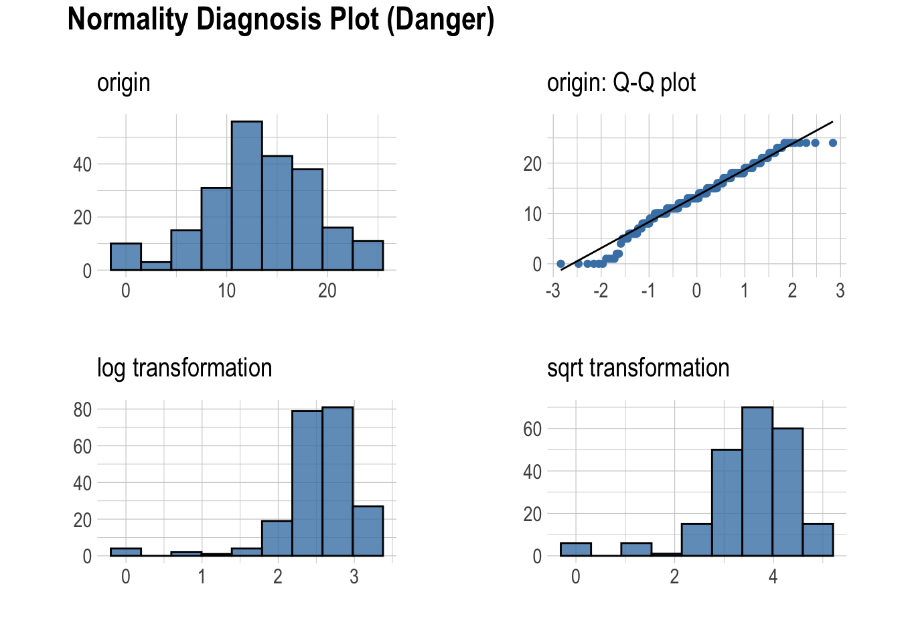
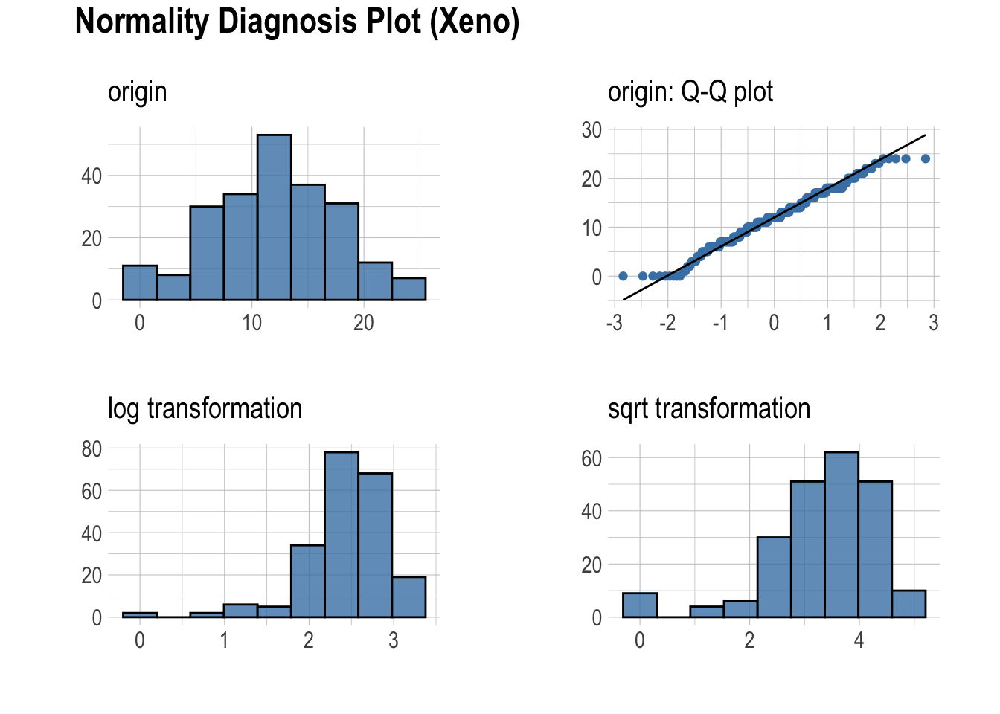
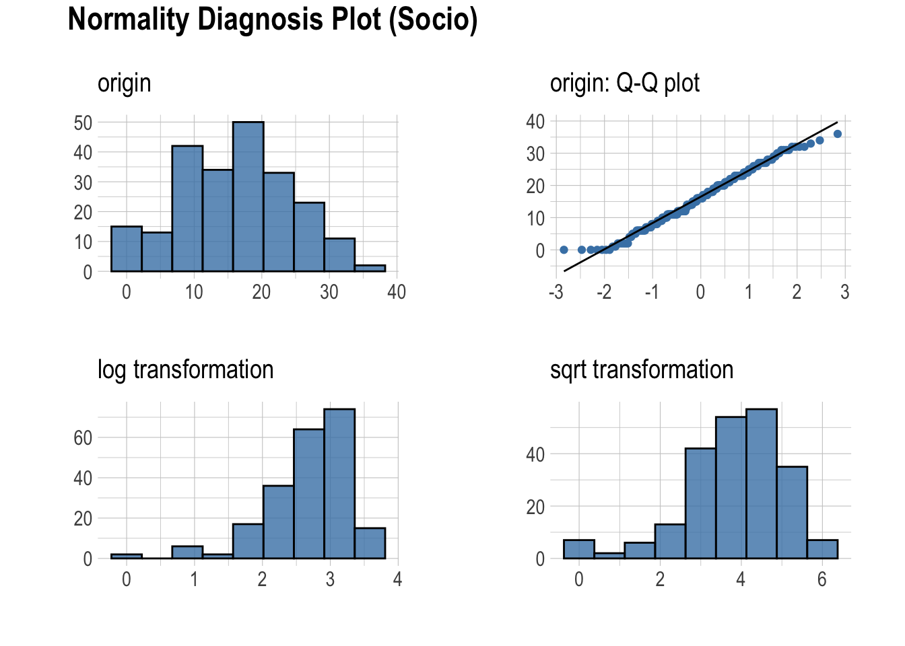
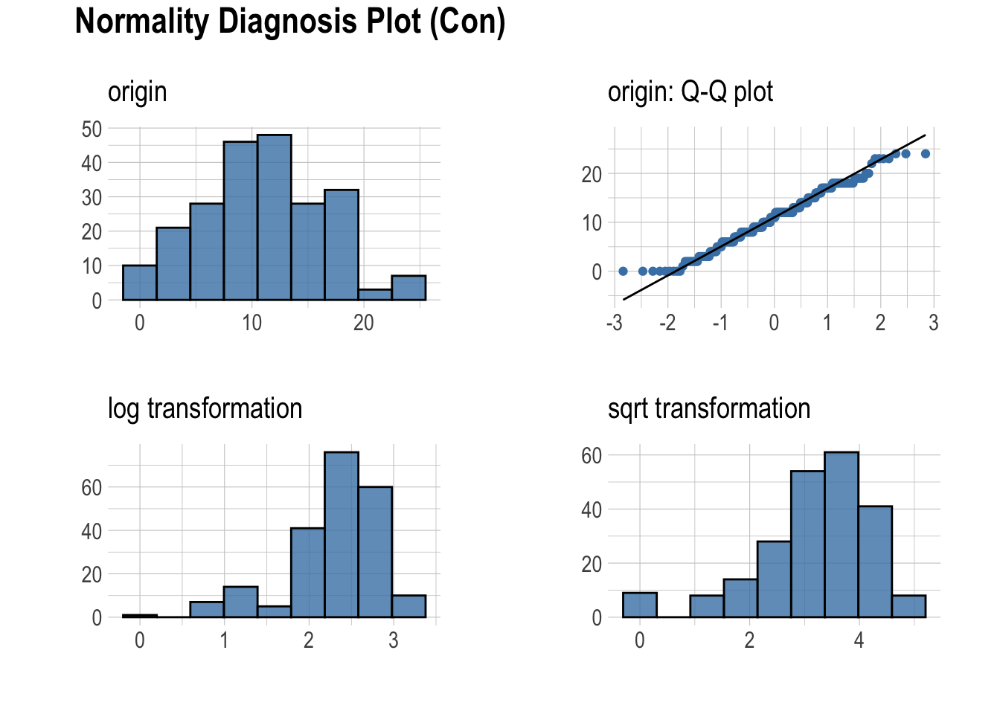
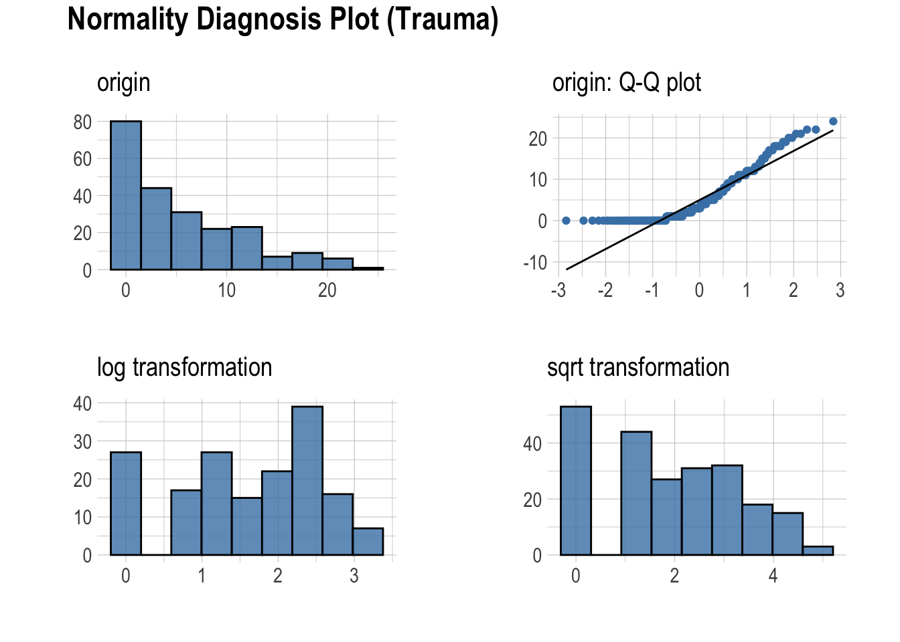
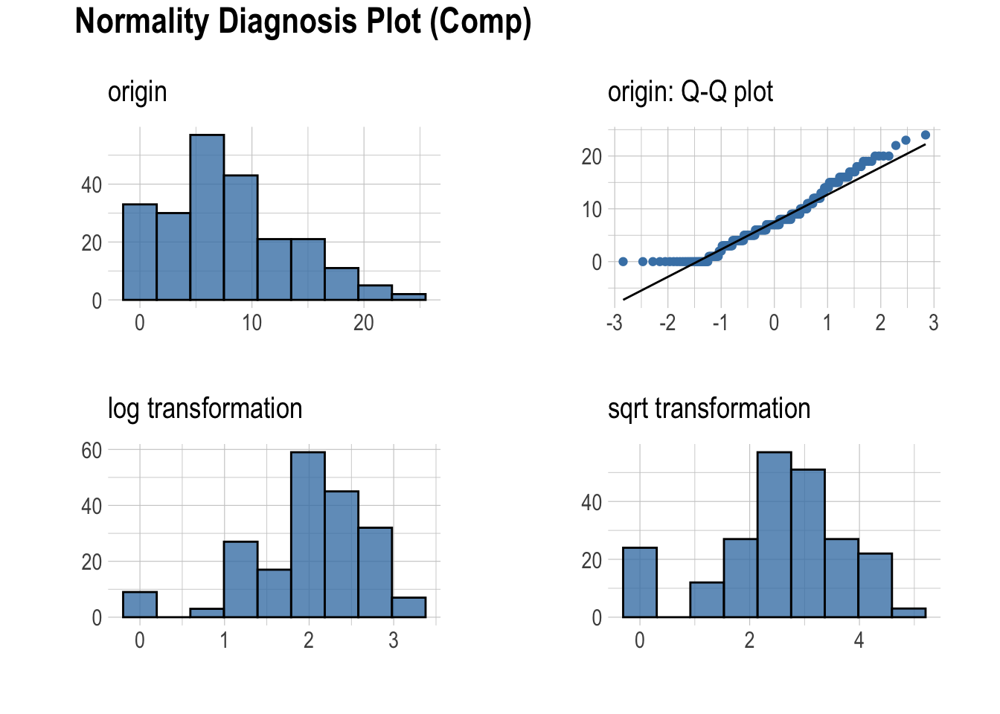
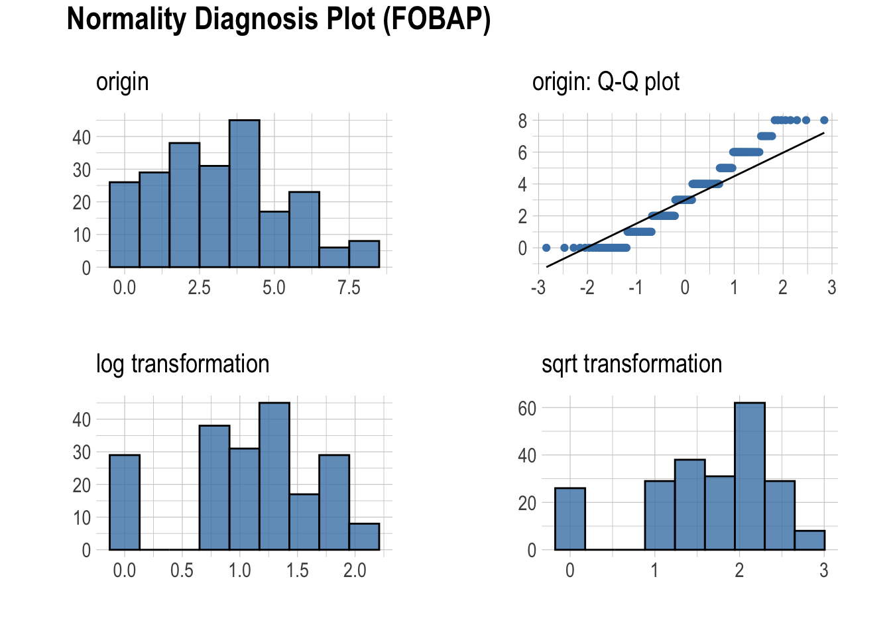
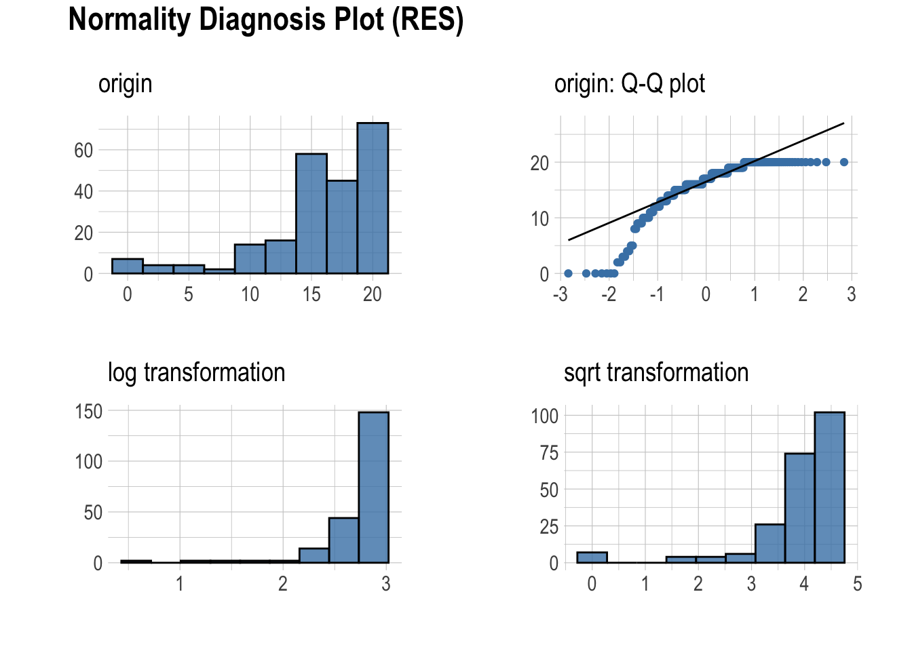
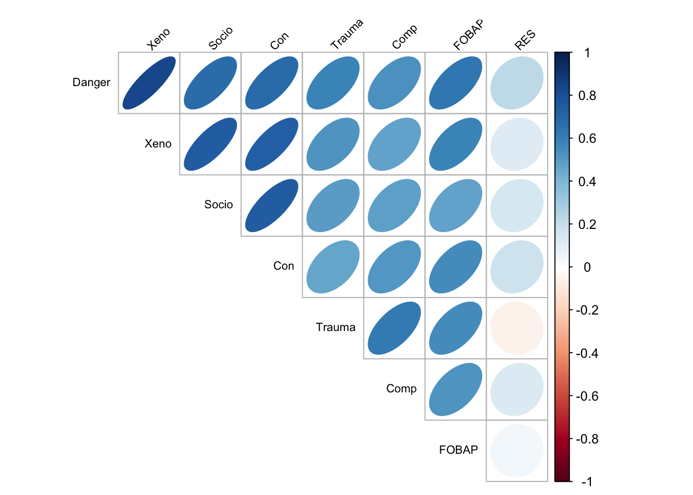

Sección 2 Análisis Exploratorio de los Datos
La base de datos fullclass.csv contiene las siguientes variables extras a class.csv:
- Teacher
Se agregan las variables FOBAP y RES.
2.1 Diagnóstico General
| variables | types | missing_count | missing_percent | unique_count | unique_rate |
|---|---|---|---|---|---|
| genero | factor | 3 | 1.345292 | 4 | 0.0179372 |
| edad | ordered | 5 | 2.242152 | 6 | 0.0269058 |
| grado_academico | ordered | 3 | 1.345292 | 4 | 0.0179372 |
| estado_residencia | factor | 11 | 4.932735 | 16 | 0.0717489 |
| habitantes_en_casa | ordered | 50 | 22.421525 | 5 | 0.0224215 |
| enfermedades | character | 9 | 4.035874 | 21 | 0.0941704 |
| nivel_educativo_clases | character | 14 | 6.278027 | 23 | 0.1031390 |
| modalidad_clases | factor | 5 | 2.242152 | 6 | 0.0269058 |
| horas_trabajo_onsite | character | 137 | 61.434978 | 6 | 0.0269058 |
| horas_trabajo_diarias | ordered | 28 | 12.556054 | 5 | 0.0224215 |
| Danger | numeric | 0 | 0.000000 | 24 | 0.1076233 |
| Xeno | numeric | 0 | 0.000000 | 25 | 0.1121076 |
| Socio | numeric | 0 | 0.000000 | 35 | 0.1569507 |
| Con | numeric | 0 | 0.000000 | 24 | 0.1076233 |
| Trauma | numeric | 0 | 0.000000 | 24 | 0.1076233 |
| Comp | numeric | 0 | 0.000000 | 24 | 0.1076233 |
| Level | ordered | 0 | 0.000000 | 4 | 0.0179372 |
| FOBAP | integer | 0 | 0.000000 | 9 | 0.0403587 |
| RES | integer | 0 | 0.000000 | 18 | 0.0807175 |
Dudas:
- ¿Las variables están en las escalas de medición correcta para cada uno?
- Si no es así, ¿cuáles debemos cambiar y a qué tipo de escala?
2.2 Análisis Univariado
## data
##
## 19 Variables 223 Observations
## --------------------------------------------------------------------------------
## genero
## n missing distinct
## 220 3 3
##
## Value Hombre Mujer Otro
## Frequency 62 157 1
## Proportion 0.282 0.714 0.005
## --------------------------------------------------------------------------------
## edad
## n missing distinct
## 218 5 5
##
## lowest : 18 a 30 años 31 a 40 años 41 a 50 años 51 a 60 años Mayor de 60 años
## highest: 18 a 30 años 31 a 40 años 41 a 50 años 51 a 60 años Mayor de 60 años
##
## Value 18 a 30 años 31 a 40 años 41 a 50 años 51 a 60 años
## Frequency 53 73 45 36
## Proportion 0.243 0.335 0.206 0.165
##
## Value Mayor de 60 años
## Frequency 11
## Proportion 0.050
## --------------------------------------------------------------------------------
## grado_academico
## n missing distinct
## 220 3 3
##
## Preparatoria (6, 0.027), Licenciatura (155, 0.705), Posgrado (maestría,
## doctorado, especialidad) (59, 0.268)
## --------------------------------------------------------------------------------
## estado_residencia
## n missing distinct
## 212 11 15
##
## lowest : Baja California Campeche Chihuahua Coahuila de Zaragoza Estado de México
## highest: Sinaloa Sonora Tamaulipas Veracruz Yucatán
##
## Baja California (49, 0.231), Campeche (3, 0.014), Chihuahua (25, 0.118),
## Coahuila de Zaragoza (17, 0.080), Estado de México (1, 0.005), Hidalgo (18,
## 0.085), Nuevo León (14, 0.066), Oaxaca (2, 0.009), Puebla (1, 0.005), San Luis
## Potosí (2, 0.009), Sinaloa (20, 0.094), Sonora (52, 0.245), Tamaulipas (6,
## 0.028), Veracruz (1, 0.005), Yucatán (1, 0.005)
## --------------------------------------------------------------------------------
## habitantes_en_casa
## n missing distinct
## 173 50 4
##
## Value 1 2 3 4
## Frequency 17 48 48 60
## Proportion 0.098 0.277 0.277 0.347
## --------------------------------------------------------------------------------
## enfermedades
## n missing distinct
## 214 9 20
##
## lowest : Cáncer; Diabetes; Diabetes;Cáncer;VIH (SIDA);Obesidad; Diabetes;Enfermedades cardiacas (p.ej. hipertensión, infarto); Diabetes;Enfermedades cardiacas (p.ej. hipertensión, infarto);Enfermedades pulmonares (p. ej. Asma, EPOC, tuberculosis);Obesidad;
## highest: Ninguna; Obesidad; Obesidad;Diabetes;Enfermedades cardiacas (p.ej. hipertensión, infarto); Obesidad;Otra; Otra;
## --------------------------------------------------------------------------------
## nivel_educativo_clases
## n missing distinct
## 209 14 22
##
## lowest : Licenciatura; Licenciatura;Posgrado; Licenciatura;Preparatoria; Posgrado; Posgrado;Licenciatura;
## highest: Secundaria; Secundaria;Licenciatura; Secundaria;Preparatoria; Secundaria;Preparatoria;Primaria; Secundaria;Primaria;
## --------------------------------------------------------------------------------
## modalidad_clases
## n missing distinct
## 218 5 5
##
## lowest : En linea En línea Mixto (presencial y en línea) No aplica Presencial
## highest: En linea En línea Mixto (presencial y en línea) No aplica Presencial
##
## En linea (1, 0.005), En línea (184, 0.844), Mixto (presencial y en línea) (16,
## 0.073), No aplica (11, 0.050), Presencial (6, 0.028)
## --------------------------------------------------------------------------------
## horas_trabajo_onsite
## n missing distinct
## 86 137 5
##
## lowest : 1 a 4 horas a la semana 4 a 8 horas a la semana 8 a 12 horas a la semana Más de 12 horas a la semana No aplica
## highest: 1 a 4 horas a la semana 4 a 8 horas a la semana 8 a 12 horas a la semana Más de 12 horas a la semana No aplica
##
## 1 a 4 horas a la semana (13, 0.151), 4 a 8 horas a la semana (19, 0.221), 8 a
## 12 horas a la semana (4, 0.047), Más de 12 horas a la semana (15, 0.174), No
## aplica (35, 0.407)
## --------------------------------------------------------------------------------
## horas_trabajo_diarias
## n missing distinct
## 195 28 4
##
## Value No aplica 4 a 6 horas al día 6 a 8 horas al día
## Frequency 4 41 73
## Proportion 0.021 0.210 0.374
##
## Value Más de 8 horas al día
## Frequency 77
## Proportion 0.395
## --------------------------------------------------------------------------------
## Danger
## n missing distinct Info Mean Gmd .05 .10
## 223 0 24 0.996 13.36 6.082 2.2 6.0
## .25 .50 .75 .90 .95
## 10.0 13.0 17.0 20.0 22.0
##
## lowest : 0 1 2 4 5, highest: 20 21 22 23 24
## --------------------------------------------------------------------------------
## Xeno
## n missing distinct Info Mean Gmd .05 .10
## 223 0 25 0.996 11.99 6.225 2 5
## .25 .50 .75 .90 .95
## 8 12 16 18 21
##
## lowest : 0 1 2 3 4, highest: 20 21 22 23 24
## --------------------------------------------------------------------------------
## Socio
## n missing distinct Info Mean Gmd .05 .10
## 223 0 35 0.998 16.19 9.335 2 6
## .25 .50 .75 .90 .95
## 11 16 22 27 30
##
## lowest : 0 1 2 4 5, highest: 31 32 33 34 36
## --------------------------------------------------------------------------------
## Con
## n missing distinct Info Mean Gmd .05 .10
## 223 0 24 0.995 10.92 6.321 2 3
## .25 .50 .75 .90 .95
## 7 11 15 18 19
##
## lowest : 0 1 2 3 4, highest: 19 20 22 23 24
## --------------------------------------------------------------------------------
## Trauma
## n missing distinct Info Mean Gmd .05 .10
## 223 0 24 0.983 5.466 6.236 0.0 0.0
## .25 .50 .75 .90 .95
## 1.0 3.0 9.0 13.8 18.0
##
## lowest : 0 1 2 3 4, highest: 19 20 21 22 24
## --------------------------------------------------------------------------------
## Comp
## n missing distinct Info Mean Gmd .05 .10
## 223 0 24 0.995 7.839 6.145 0 0
## .25 .50 .75 .90 .95
## 4 7 11 16 18
##
## lowest : 0 1 2 3 4, highest: 19 20 22 23 24
## --------------------------------------------------------------------------------
## Level
## n missing distinct
## 223 0 4
##
## Value ABSENT MILD MODERATE SEVERE
## Frequency 35 113 67 8
## Proportion 0.157 0.507 0.300 0.036
## --------------------------------------------------------------------------------
## FOBAP
## n missing distinct Info Mean Gmd
## 223 0 9 0.979 3.17 2.399
##
## lowest : 0 1 2 3 4, highest: 4 5 6 7 8
##
## Value 0 1 2 3 4 5 6 7 8
## Frequency 26 29 38 31 45 17 23 6 8
## Proportion 0.117 0.130 0.170 0.139 0.202 0.076 0.103 0.027 0.036
## --------------------------------------------------------------------------------
## RES
## n missing distinct Info Mean Gmd .05 .10
## 223 0 18 0.982 15.72 4.785 4 10
## .25 .50 .75 .90 .95
## 14 17 19 20 20
##
## lowest : 0 2 3 4 5, highest: 16 17 18 19 20
##
## Value 0 2 3 4 5 8 9 10 11 12 13
## Frequency 7 2 2 2 2 2 4 6 4 7 9
## Proportion 0.031 0.009 0.009 0.009 0.009 0.009 0.018 0.027 0.018 0.031 0.040
##
## Value 14 15 16 17 18 19 20
## Frequency 10 18 30 16 29 24 49
## Proportion 0.045 0.081 0.135 0.072 0.130 0.108 0.220
## --------------------------------------------------------------------------------2.3 Visualizaciones de Normalidad en Variables Numéricas
| vars | statistic | p_value | sample |
|---|---|---|---|
| Danger | 0.9775065 | 0.0012611 | 223 |
| Xeno | 0.9854928 | 0.0224277 | 223 |
| Socio | 0.9872429 | 0.0437623 | 223 |
| Con | 0.9838725 | 0.0121940 | 223 |
| Trauma | 0.8545071 | 0.0000000 | 223 |
| Comp | 0.9528619 | 0.0000011 | 223 |
| FOBAP | 0.9489052 | 0.0000004 | 223 |
| RES | 0.7967957 | 0.0000000 | 223 |








2.4 Análisis Bivariado
| var1 | var2 | coef_corr |
|---|---|---|
| Xeno | Danger | 0.8315725 |
| Socio | Danger | 0.6757264 |
| Con | Danger | 0.6856952 |
| Trauma | Danger | 0.5800335 |
| Comp | Danger | 0.5397050 |
| FOBAP | Danger | 0.6300303 |
| RES | Danger | 0.2233475 |
| Danger | Xeno | 0.8315725 |
| Socio | Xeno | 0.7470481 |
| Con | Xeno | 0.7390266 |
| Trauma | Xeno | 0.5240995 |
| Comp | Xeno | 0.4792495 |
| FOBAP | Xeno | 0.5819781 |
| RES | Xeno | 0.1164122 |
| Danger | Socio | 0.6757264 |
| Xeno | Socio | 0.7470481 |
| Con | Socio | 0.7419982 |
| Trauma | Socio | 0.4993905 |
| Comp | Socio | 0.4833135 |
| FOBAP | Socio | 0.4788010 |
| RES | Socio | 0.1406821 |
| Danger | Con | 0.6856952 |
| Xeno | Con | 0.7390266 |
| Socio | Con | 0.7419982 |
| Trauma | Con | 0.4659353 |
| Comp | Con | 0.5155762 |
| FOBAP | Con | 0.5580933 |
| RES | Con | 0.1757603 |
| Danger | Trauma | 0.5800335 |
| Xeno | Trauma | 0.5240995 |
| Socio | Trauma | 0.4993905 |
| Con | Trauma | 0.4659353 |
| Comp | Trauma | 0.6139690 |
| FOBAP | Trauma | 0.5580095 |
| RES | Trauma | -0.0517958 |
| Danger | Comp | 0.5397050 |
| Xeno | Comp | 0.4792495 |
| Socio | Comp | 0.4833135 |
| Con | Comp | 0.5155762 |
| Trauma | Comp | 0.6139690 |
| FOBAP | Comp | 0.5247354 |
| RES | Comp | 0.1239755 |
| Danger | FOBAP | 0.6300303 |
| Xeno | FOBAP | 0.5819781 |
| Socio | FOBAP | 0.4788010 |
| Con | FOBAP | 0.5580933 |
| Trauma | FOBAP | 0.5580095 |
| Comp | FOBAP | 0.5247354 |
| RES | FOBAP | 0.0466312 |
| Danger | RES | 0.2233475 |
| Xeno | RES | 0.1164122 |
| Socio | RES | 0.1406821 |
| Con | RES | 0.1757603 |
| Trauma | RES | -0.0517958 |
| Comp | RES | 0.1239755 |
| FOBAP | RES | 0.0466312 |
2.4.1 Matriz de correlación, variables numéricas
